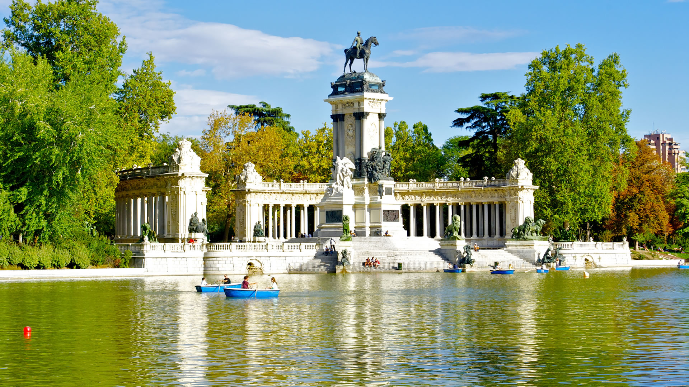

¿Qué visitar en Madrid?
Parque del Retiro
El Parque del Retiro es uno de los lugares más emblemáticos de Madrid. Este enorme parque cuenta con áreas verdes, estanques y jardines, como el de los Parterres y el Jardín de Vivaces. El Retiro es el pulmón de la ciudad, ideal para disfrutar de un paseo tranquilo o un día de picnic.
El parque incluye monumentos históricos como el Palacio de Cristal y el Estanque Grande, donde se puede pasear en bote mientras se admira el paisaje urbano que rodea este espacio verde en el corazón de Madrid.
Plaza Mayor

La Plaza Mayor de Madrid es un punto central en la ciudad, famosa por su arquitectura y su historia. Construida en el siglo XVII, esta plaza es un símbolo de la época de los Austrias y uno de los principales lugares de encuentro de la ciudad.
Con una estructura rectangular rodeada de edificios de tres plantas, la plaza alberga numerosos restaurantes y tiendas, y es escenario de eventos y festivales, especialmente durante las festividades de San Isidro y Navidad.
Palacio Real
El Palacio Real de Madrid es la residencia oficial de la familia real española, aunque actualmente se utiliza para ceremonias de estado y eventos oficiales. Es el palacio más grande de Europa Occidental y un ejemplo impresionante de la arquitectura barroca del siglo XVIII.
El palacio cuenta con jardines históricos como el Campo del Moro y los Jardines de Sabatini, y ofrece vistas espectaculares de la ciudad. Su interior incluye decoraciones y obras de arte de gran valor histórico.